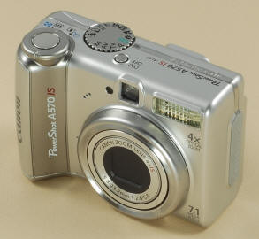
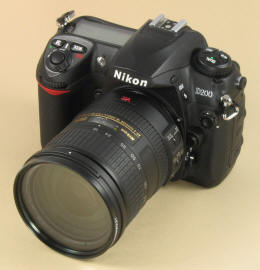

Fun Projects for your LEGO� MINDSTORMS� NXT!
|
|
Fun Projects for your LEGO� MINDSTORMS� NXT! |
Three Stages to Better Photos of LEGO Creations
| There are lots of kinds of digital cameras out there
with a wide range of capabilities. To use the tips on these pages,
you will need a camera that has some degree of manual control over the
exposure, and be willing to learn about and experiment a bit with the
settings. If your camera has only a fully automatic mode (or a few
"Scene" modes), or you just don't want to bother with camera settings,
then you should just stick to the Quick and Easy
Fix for taking better pictures for now. To use these tips, you will need a camera that has an "Aperture Priority" mode (lets you set the f-stop), or a "Shutter Priority" mode (lets you set the shutter speed), or a "Manual" mode (lets you set both the f-stop and the shutter speed). Ideally, you would also be able to control the ISO sensitivity and the White Balance. For the examples on this page, I will show settings
and picture results for two different cameras, a modern compact "point &
shoot" camera, and a digital SLR: |
|  |  |
| The Canon
PowerShot A570 IS is a compact automatic "point & shoot" camera that includes semi-automatic and manual modes. |
Like all
digital SLR cameras, the Nikon D200 includes a full set of manual control settings and very high image quality. |
If your camera is "in between" these two, then take a look at the tips for both cameras and see which one is closer to your camera's capabilities. The basic techniques are the same and differ only in the values of the settings used. |
|
|